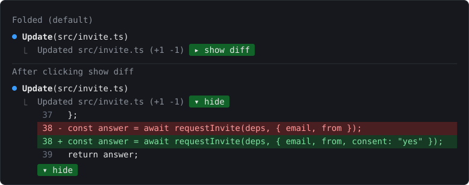
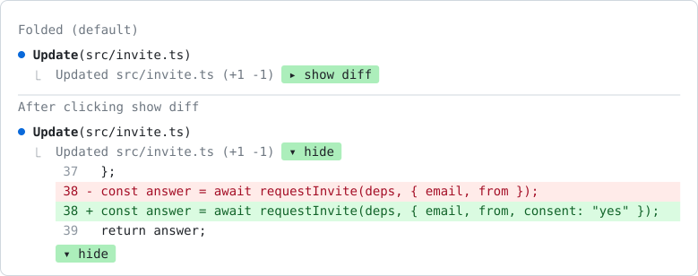

T-mods
My mods for Claude Code. A mod is a Claude Code plugin made of function hooks: a TypeScript module that can redraw parts of the terminal, add slash commands, or act on tool calls.


Who it is for
Claude Code users who want working examples of function-hook plugins, and anyone who runs Claude Code the way I do: many agents at once in herdr tabs, PRs reviewed by CodeRabbit, and pushes to a phone.
These are my own mods, built for that setup. fold-edits, compact-keeper and phone-check-nudge need nothing outside Claude Code. The other three call tools that are not in this repo, listed under each one below.
The six mods
fold-edits
Folds every Edit and Write diff, and the diff under a shell command that changed files, into one line, with a green button that opens the diff. A diff over 10,000 characters is split into several blocks with correct line numbers.
Needs: nothing else.
merge-gate
Refuses gh pr merge until the head has green CI, a real review, 0 open threads and, on listed repos, an Astra line. Shows the CodeRabbit budget in the status line.
Needs: gh, plus coderabbit_status.py and coderabbit_budget.py in ~/.claude/skills/tatendaz-github/scripts/. Public versions of those scripts are in coderabbit-failover, under a different path.
swarm-board
/board opens a live pane of the repo's open PRs, merges in the last 24 hours, herdr agents and what needs you. It refreshes every 60 seconds while open. No model call.
Needs: git, gh, herdr.
swarm-janitor
Every 3 minutes, closes the herdr tab of an idle agent whose worktree PR merged, and pushes your phone when an agent stays blocked. A lease makes sure only one session acts as the janitor.
Needs: herdr, git, gh, and ~/.claude/bin/phone-notify for pushes.
compact-keeper
Makes every compaction quote your decisions, approvals and open questions word for word. It adds up to your last 60 prompts to the summarizer's instructions. No extra model call.
Needs: nothing else.
phone-check-nudge
After a turn that edited UI files and never looked at them, shows a band with a Run check button. Run check sends one prompt: check the change on the iOS simulator and Android emulator, or a phone-width browser for web, in light and dark mode.
Needs: nothing else.
merge-gate, up close
Before any Bash command that runs gh pr merge, it reads the PR and its review state. The merge goes through only when all of these hold on the current head:
- Every CI check run is green. Only the newest run of each check counts. A head with no CI check at all is refused.
- A real CodeRabbit review or a
review-failoversuccess on this exact SHA, not the bare stamp@coderabbitai ignoreleaves. - 0 unresolved review threads.
- Not a draft, and no merge conflicts.
It accepts one form of merge only:
When the PR is clean, the hook runs a command it builds from the checked PR, with --match-head-commit <checked sha>, so a push that lands in between makes gh refuse. --admin in any form, --auto, pipes, quotes, $ and the REST or GraphQL merge calls are refused. If gh or the status script fails, the merge is refused.
Install
Clone the repo to ~/.claude/mods:
Then list each mod folder in the env block of ~/.claude/settings.json. Separate folders with :.
New sessions load every listed mod. Saving a file in a listed folder reloads that mod in a running session.
To try one mod for a single session:
How a mod is built
Each mod is a folder with a manifest, a hooks module and its tests:
One check for the whole repo
scripts/check.sh fails when a mod does not validate, has no passing tests, is missing from the README, or is missing from CLAUDE_CODE_PLUGIN_DIRS.
New mods
Built with the plugin-authoring skill, moved into ~/.claude/mods/<name>/, given a README and tests, then committed to main.
Status
Every mod is at version 0.1.0.
- The plugin API is early access, and it can change between Claude Code releases. These mods were last checked on Claude Code 2.1.288.
- merge-gate is a guardrail against Claude merging by mistake, not a wall. A script file that runs
gh pr mergeis not caught. Its live merge path has not been run; the tests use a fakegh. - compact-keeper has tests but has not been watched on a real
/compactyet. - The repo has no license file.